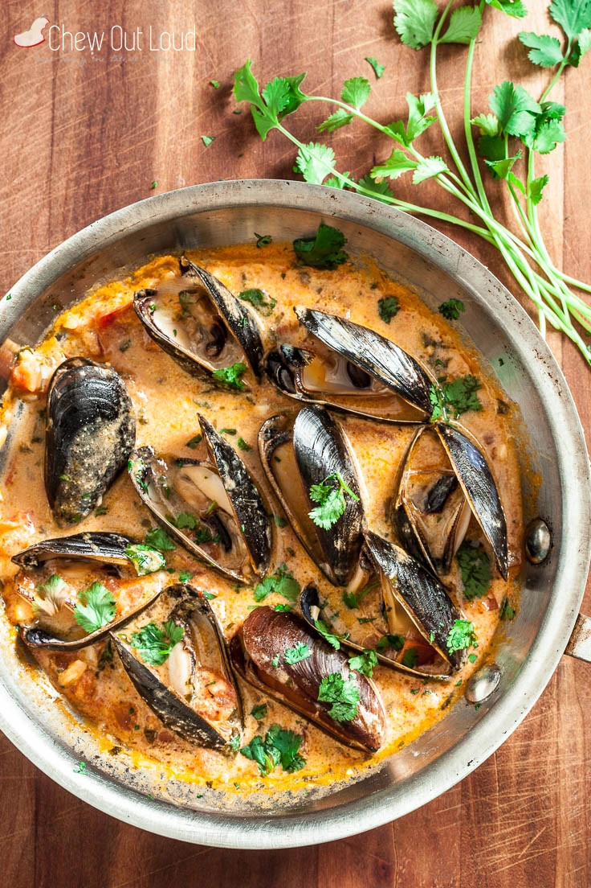

Meowscular Chef's Platter: Red Thai Curry Mussels

Image source
Creamy and smoky Mussels in Red Curry so hunters can stay hot even withing freezing cold of Hoarfrost Reach
Serves: 8-10
Ingredients:
- 1 lb or 500 g mussels, clean + debearded
- 1 small shallot, minced
- 2 tsp fresh lemon grass, grated
- 1 Tbsp fresh ginger, grated
- 2 cloves garlic, thinly sliced
- 1 Tbsp Tomato paste
- 1 Tbsp Thai red chili paste
- ⅓ cup white wine
- 1 (14 oz) can unsweetened coconut milk
- 1 tsp fish sauce
- 1 Tbsp cilantro, chopped
- 2 Tbsp vegetable oil
- kosher salt
- freshly ground black pepper
Steps:
- Heat oil in a large pot over medium-high heat.
- Add the shallots and cook until lightly browned and tender, about 3 minutes.
- Add the lemon grass, ginger, and garlic. Cook for an additional minute.
- Add the tomato paste and chili paste, continue cooking for 2 minutes.
- Deglaze the pan with the wine. Cook for 1-2 minutes to allow the alcohol smell to cook off.
- Add the coconut milk and fish sauce, bring the mixture to a boil.
- Add the mussels, cover the pot with a lid, and cook for 4-5 minute until all the mussels open.
- Transfer the musself to a large bowl, removing any unopened mussels in the process.
- Pour the broth over the mussels.
- Garnish with chopped cilantro.
Back to main